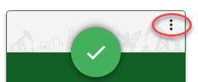

Production Overview
Production Cards
Completed
The production has been completed successfully.
In Progress
The production is not yet finished.
In Queue
The production is not yet started.
Failed
The production did not succeed due to an error.
Canceled
The production has been terminated
Search or Filter
If there are many productions, use the search field to search for a specific production. Or filter to show only a subset of all productions.
Production Card Options

Note: Not all options are available for all Production Card statuses
Download
Download the entire production, including all related files.
Load Files
Download or Edit the load files.
Show Location
Show (and copy the link to) the location of the production.
Reuse Settings
Reuse the settings of this production for a new one.
Delete
Delete the production.
For a completed production, you can choose to delete All related files. Or delete Output Only; This deletes the produced files but keeps the production bates numbers available on the documents (which shows that they were part of this production).